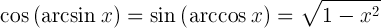
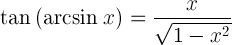
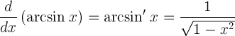
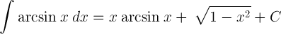

Arcsine function
arcsin(x), sin-1(x), inverse sine function.
Arcsin definition
The arcsine of x is defined as the inverse sine function of x when -1≤x≤1.
When the sine of y is equal to x:
sin y = x
Then the arcsine of x is equal to the inverse sine function of x, which is equal to y:
arcsin x = sin-1 x = y
Example
arcsin 1 = sin-1 1 = π/2 rad = 90°
Graph of arcsin

Arcsin rules
| Rule name | Rule |
|---|---|
| Sine of arcsine | sin( arcsin x ) = x |
| Arcsine of sine | arcsin( sin x ) = x+2kπ, when k∈ℤ (k is integer) |
| Arcsin of negative argument | arcsin(-x) = - arcsin x |
| Complementary angles | arcsin x = π/2 - arccos x = 90° - arccos x |
| Arcsin sum | arcsin α + arcsin(β) = arcsin( α√(1-β2) + β√(1-α2) ) |
| Arcsin difference | arcsin α - arcsin(β) = arcsin( α√(1-β2) - β√(1-α2) ) |
| Cosine of arcsine |  |
| Tangent of arcsine |  |
| Derivative of arcsine |  |
| Indefinite integral of arcsine |  |
Arcsin table
| x | arcsin(x) (rad) |
arcsin(x) (°) |
|---|---|---|
| -1 | -π/2 | -90° |
| -√3/2 | -π/3 | -60° |
| -√2/2 | -π/4 | -45° |
| -1/2 | -π/6 | -30° |
| 0 | 0 | 0° |
| 1/2 | π/6 | 30° |
| √2/2 | π/4 | 45° |
| √3/2 | π/3 | 60° |
| 1 | π/2 | 90° |